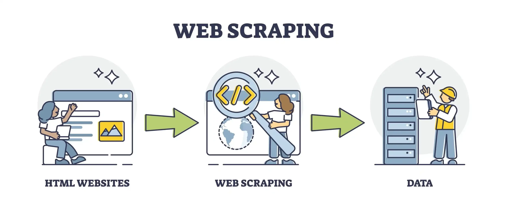

Web Scraping Project

Proyek ini bertujuan untuk mengumpulkan data dari berbagai sumber web secara otomatis dan efisien.
Fitur Utama
- Pengumpulan Data: Mengambil data dari halaman web secara otomatis.
- Ekstraksi Informasi: Menyaring dan mengekstrak informasi penting dari halaman web.
- Format Output: Menyimpan data dalam format yang dapat digunakan seperti CSV, JSON, atau database.
Teknologi yang Digunakan
Python, BeautifulSoup, Scrapy, Requests, dan Selenium untuk melakukan web scraping dan pengolahan data.